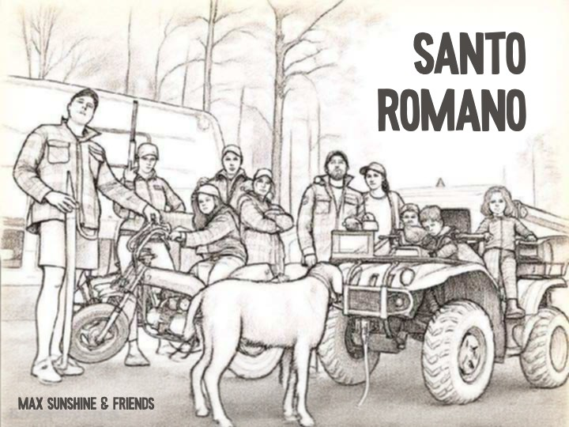

Santo Romano
Max Sunshine & Friends
L'album
Les chansons Le temps s'évade à St-Romain, Gars de bois et À la vie, à la mo... sont des créations uniques.
Les autres chansons sont des dérivées de Le temps s'évade à St-Romain dans un style ou une langue différente, adaptée à leur style respectif.
Remerciements
Tout d’abord, un merci particulier à Ronaldino. Sans lui, rien de tout cela n’aurait eu lieu. Merci à Charline-Hélène, JP, Christian et Marie-Élaine pour leur investissement dans le bonheur de plusieurs. Merci à la famille, aux amis, aux enfants, aux voleurs (les estis) qui ont pimenté l’aventure.
Un merci à la forêt, aux épinettes (particulièrement les rouges qu’on peut reconnaître car… elles sont rouges), au ruisseau, aux arbres debouts, aux arbres morts, au bois fendu ainsi qu’à celui à fendre, au 4 roues des adultes, au 4 roues des enfants, au beau temps, à la pluie, aux guimauves, aux biscuits célébrations, aux enfants qui font des smores, au jeu de toc, au jeu connect-4, à la roulotte, au pickup, au poêle à bois de 400 livres qu’on a levé comme des gars de bois pour le mettre dans la boite du pickup, aux bleuets, au bleuet (pu jamais), aux cannes à pêches, aux bâtons, aux monstres, aux fous rires, aux phrases incomplètes et incompréhensibles sur le bord du feu, aux fausses notes, aux White Claws à la mangue, au demi-burger qu’on a gardé pour demain, au tiers de beurrée qu’on a gardée inutilement pour plus tard, au plat de pâtes qui a été gardé et jeté trop tôt, à l’huile de palme, au mousseux, au vin rouge et à la bonne humeur généralisée.
Un merci particulier à Roch Voisine et à Claude Barzotti. Sans vous l’histoire ne serait pas complète.